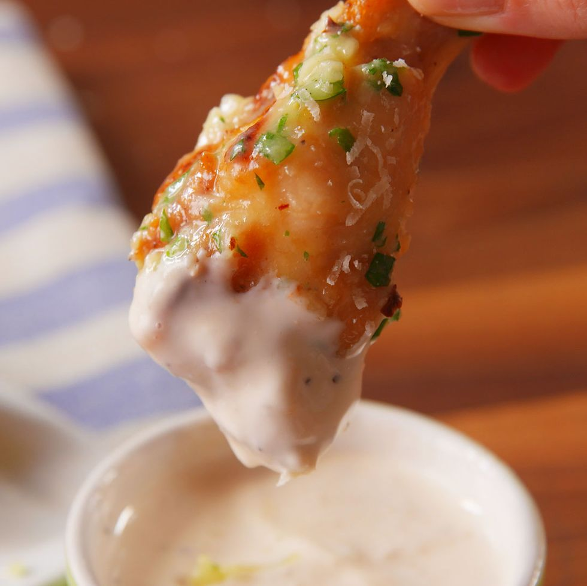

Garlic Parmesian Wings

Ingredients
- 2 lb. bone-in chicken wings
- 1/4 c. vegetable oil
- Kosher salt
- Freshly ground black pepper
- 1 stick melted butter
- 4 cloves garlic, minced
- 2 tbsp. freshly chopped parsley
- 3/4 c. freshly grated Parmesan, plus more for serving
- 1 tsp. red pepper flakes Caesar dressing, for dipping
Steps
- Preheat oven to 400° and line a large rimmed baking sheet with a metal rack. Toss wings with oil and season with salt and pepper.
- Transfer wings to prepared metal rack and bake until golden and crispy, about 50 minutes.
- Make sauce: In a large bowl, stir together melted butter, garlic, parsley, Parmesan, and red pepper flakes. Add wings and toss until completely coated.
- Sprinkle with Parmesan and serve with Caesar dressing.